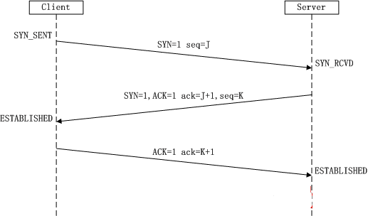

上文已经介绍了TCP和UDP同属于传输层协议，本文将简单介绍TCP，重点分析TCP的特性以及与UDP的区别，如何选择通信协议等。
TCP介绍
传输控制协议（TCP，Transmission Control Protocol）是一种面向连接的、可靠的、基于字节流的传输层通信协议，由IETF的RFC 793定义。
TCP是一个应用非常广泛的传输层协议，也有很多应用层协议栈是在TCP的基础上封装的。TCP是基于ICMP,IP协议之上的封装。如下图
TCP/IP协议簇也是非常丰富，如下图：
TCP协议头详解
IP协议头（20字节）
tcp协议头（20字节）
2字节源端口号
2字节目的端口号
4字节序列号
发送字节流的起始字节序列号
4字节确认号
接收端期望接收的下一个字节序列号
2字节标志位
- TCP头长度：占4bit，以
4Byte为单位显示TCP头长，TCP协议头固定20Byte，因此length最小为5（以4字节为一个单位），选项部分最长40Byte，加上固定头长总共60Byte，所以length最大值为15，4bit刚刚好； - Resv：占4bit，预留；
- CWR（Congestion Window Reduce）：发送端收到ECE置位的数据后进行设置，用来通知接收端已收到ECE标志的数据，了解了拥塞情况，接收端收到CWR置位消息后，不再设置ECE标志，同时发送端发送CWR信息时，将开始减小拥塞窗口，以此减小数据发送量，避免拥塞；
- ECE（ECN ECHO）：网络拥塞一般出现在路由交换时，在支持ECN功能情况下，发生拥塞时路由会设置IP中该标志位，接收端收到IP头中标志了ECN的报文后，在返回的数据ACK中设置ECE标志，表示链路发生拥塞，将拥塞消息通知发送端；
- URG：紧急标志，置位后不需要按照正常报文按序处理，执行
优先处理； - ACK：确认标志；
- PSH：将缓存中的数据以及当前psh报文一起执行推送，从缓存区发出去；
- RST：强行复位标志，发送数据包出现错误时，TCP会发送该状态包；
- SYN：请求建立连接时置位该标志，第一个握手报文携带；
- FIN：请求连接关闭时置位该标志。
- TCP头长度：占4bit，以
2字节窗口大小
表示接收端接收缓存剩余大小
2字节校验和
包括TCP协议头与数据整体的校验字段
2字节紧急指针
标志位URG置位后使用，为一个正的偏移量，表示当前报文中起始字节开始需要偏移的长度，这个偏移到的字节就是紧急数据的结束字节，也就是通过偏移量确定了数据中需要紧急发送的字节个数，16bit；
Opention
一般用于握手时接收端，发送端信息的交互，以及数据交互过程中；最大40Byte；
通过协议头，TCP即可通过五元组来确定哪个数据包来自哪个客户端。$五元组 = 四元组+协议类型（tcp/udp）$组成。
四元组：源IP，源端口，目标IP，目标端口
五元组与socket的fd是对应的
send数据：是通过fd找到相应的五元组信息
recv数据：是通过五元组找到相应fd的信息
TCP分段
最大报文段长度MSS（Maximum Segment Size）
收发双方协商通信时每一个报文段所能承载的最大数据长度。
$MSS = MTU - TCP头 - IP头$
最大传输单元MTU(Maximum Transmission Unit)
是包或帧的最大长度，一般以字节记。如果MTU过大，在碰到路由器时会被拒绝转发，因为它不能处理过大的包。如果太小，因为协议一定要在包(或帧)上加上包头，那实际传送的数据量就会过小，这样也划不来。大部分操作系统会提供给用户一个默认值，该值一般对用户是比较合适的。
1 | # 1. 查看MTU值,通常Linux默认是1500字节 |
相比于UDP那样直接丢，TCP有自动分段的功能，TCP会根据实际MTU大小自动分包发送，这也是TCP连接可靠的一个保证。
TCP和MTU的关系
- MTU（Maximum Transmission Unit）是指通信协议的链路层上面所能通过的最大数据包大小，LINUX默认1500字节。
- 单个UDP传输的最大内容 $1460 = 1500 - 20 - 20$ 字节，但由于不同的网络中转设备设置的MTU值并不相同。
Internet上的标准MTU值为 $576$ 字节，TCP的数据包长度控制在 $536 = 576-20-20$ 字节以内；- 局域网环境下，UDP的数据长度控制在$1460$个字节以内。
TCP三次握手
TCP建立连接的过程是需要三次握手的，三次握手由客户端执行connect开始触发，服务器执行accept完成连接。代码太简单，我们分析代码层看不到的东西，三次握手是怎么进行的？先看下图

第一次握手：client将标志位SYN=1 生成一个随机序列号seq=J发送
第二次握手：server将标志位SYN=1, ACK=1； 然后将收到的序列号加1赋值给确认号ack=J+1,并将自己的序列号发送给客户端seq=K
第三次握手：client将标志位ACK=1, 然后将收到的序列号加1赋值给确认号ack=K+1发送
完成三次握手后，客户端，服务器才能都进入ESTABLESHED(已确立的)状态，才能进行收发数据。
为何是三次握手？两次行不行？
答：两次不行，如果两次握手就建立连接，那客户端发完请求就关闭了，服务器还认为客户端已建立连接，显然这是一个无效的连接，又或者客户端连续发起了两次连接，显然只有一个有效请求，但服务器却分辨不出以为是两个有效连接。所以，TCP作为一个可靠连接协议必然是三次握手。另外在我个人看来，要确定连接只需确定彼此双方都能收发数据就行，而三次握手正好可以表明双方都能收发成功。两次握手不能证明客户端能收到数据
好比如下情景：
A:在吗？
B:在，你在吗？
A:我在(试想一下如果A不回复这句，B如何确定A还在？)
TCP四次挥手
前面我们已经知道了3次握手可以确定TCP的连接，那TCP是如何断开连接的呢？没错，四次挥手。先看下面两张图
客户端主动发起断开连接（服务器主动发起也是一样）
第一次挥手：Client发送一个FIN，用来关闭Client到Server的数据传送，Client进入FIN_WAIT_1状态。
第二次挥手：Server收到FIN后，发送一个ACK给Client，确认序号为收到序号+1（与SYN相同，一个FIN占用一个序号），Server进入CLOSE_WAIT状态。
第三次挥手：Server发送一个FIN，用来关闭Server到Client的数据传送，Server进入LAST_ACK状态。
第四次挥手：Client收到FIN后，Client进入TIME_WAIT状态，接着发送一个ACK给Server，确认序号为收到序号+1，Server进入CLOSED状态，完成四次挥手。
双发同时发起断开连接
后面这个图不再写每次挥手的作用，因为基本和上一个图一样。可以总结的是：4次挥手之后，无论客户端或是服务器都将进入TIME_WAIT状态或者CLOSED状态z,这两个状态都有关闭的意思，那区别是什么呢？为什么需要两个关闭状态呢一个不就行了吗或者说干嘛不直接进入CLOSED状态？带着这两个疑问继续往下看。
TCP状态装换图
- CLOSED：这是最开始的状态
- LISTEN：服务器调用
listen()之后的状态 - SYN_SENT：客户端发起连接请求之后的状态
- SYN_RECV：服务器收到客户端连接请求之后的状态
- ESTABLISHED：这是双方建立连接之后的状态，该状态即可正常收发数据了。
- FIN_WAIT_1：调用
close()(发送完FIN)后的状态 - CLOS_WAIT：等待关闭状态，在ESTABLISHED状态收到FIN后进入的状态，回发FIN，发完进入LAST_ASK
- FIN_WAIT_2：在FIN_WAIT_1的状态先收到ack，然后收到FIN后的状态
- LAST_ASK: 最后确认状态，在CLOS_WAIT状态回发FIN之后进入的状态
- TIME_WAIT：由FIN_WAIT_1/FIN_WAIT_2发送ACK后的状态,或者在CLOSING接收到ACK后的状态。总之这是一个挥手完成后的状态
- CLOSING：在FIN_WAIT_1状态的时候先收到FIN，然后收到ack的状态
握手触发前5个状态，挥手触发后6个状态。有上图可知，TCP真正的关闭状态才是CLOSED,而TIME_WAIT并非关闭状态，TIME_WAIT需要经过2MSL(Maximum Segment Lifetime 报文最大生存时间)超时才会变成CLOSED状态。
RFC793中规定MSL为2分钟，实际应用中常用的是30秒，1分钟和2分钟（这个和操作系统有关，Solaris2.2MSL是2分钟，测试方法就是用netstat命令查看状态变化需要时间/2即可。）
2MSL TIME_WAIT状态的存在有两个理由：
- 让4次挥手关闭流程更加可靠；
4次挥手的最后一个ACK是是由主动关闭方发送出去的，若这个ACK丢失，被动关闭方会再次发一个FIN过来。若主动关闭方能够保持一个2MSL的TIME_WAIT状态，则有更大的机会让丢失的ACK被再次发送出去。
- 防止
lost duplicate对后续新建正常链接的传输造成破坏。lost duplicate在实际的网络中非常常见，经常是由于路由器产生故障，路径无法收敛，导致一个packet在路由器A，B，C之间做类似死循环的跳转。IP头部有个TTL（time to live的缩写，存储了一个ip数据报可以经过的最大路由数，每经过一个处理他的路由器此值就减1，当此值为0则数据报将被丢弃，同时发送ICMP报文通知源主机），限制了一个包在网络中的最大跳数，因此这个包有两种命运，要么最后TTL变为0，在网络中消失；要么TTL在变为0之前路由器路径收敛，它凭借剩余的TTL跳数终于到达目的地。但非常可惜的是TCP通过超时重传机制在早些时候发送了一个跟它一模一样的包，并先于它达到了目的地，因此它的命运也就注定被TCP协议栈抛弃。TTL与MSL是有关系的但不是简单的相等的关系，MSL要大于等于TTL。
TCP可靠性的保证
TCP采用一种名为“带重传功能的肯定确认（positive acknowledge with retransmission）”的技术作为提供可靠数据传输服务的基础。这项技术要求接收方收到数据之后回发确认信息ACK。发送方对发出的每个分组都暂存着，在发送下一个分组之前等待确认信息。发送方还在送出分组的同时启动一个定时器，并在定时器的定时期满而确认信息还没有到达的情况下，重发刚才发出的分组。为了避免由于网络延迟引起迟到的确认和重复的确认，协议规定在确认信息中稍带一个分组的序号，使接收方能正确将分组与确认关联起来。
滑动窗口
TCP译名传输控制协议，而tcpsocket叫流式套接字。流式也就是告诉我们tcp的数据包是有先后顺序的，先发先到而这又是由滑动窗口来处理的，滑动窗口又是如何保证顺序的呢？
滑动窗口由两个索引，一前，一后，中间部分即为滑动窗口大小。
对于发送端：前索引表示的是已发送的位置，后索引表示不允许发送的位置
对于接收端：前索引表示的是已确认的位置，后索引表示不允许接收的位置
窗口边沿移动
- 左边沿右边沿靠近，叫窗口合拢。数据被发送和确认时
- 右边沿向右移动，叫窗口张开。接收端读取已经确认的数据并释放了TCP的接收缓存时
- 右边沿左边沿靠近，叫窗口收缩。不建议，一但出现零窗口（窗口大小为0），发送方将不能发送任何数据，却占用着资源，如何解决这种占坑不工作的现象？请看后面的坚持定时器。
窗口大小
发送窗口的大小是由拥塞计算出来的，先小后大，最后趋于稳定波动，这是动态计算的，这将影响TCP性能。对于以太网，默认大小是4kb，当文件传输的时候，调到16kb可以增加40%左右的吞吐量。
拥塞避免算法和慢启动算法
拥塞
当数据到达一个大的管道（如一个快速局域网）并向一个较小的管道（如一个较慢的广域网）发送时便会发生拥塞。当多个输入流到达一个路由器，而路由器的输出流小于这些输入流的总和时也会发生拥塞。如何解决拥塞？
慢启动算法是一个在连接上发起数据流的方法，但有时我们会达到中间路由器的极限，此时分组将被丢弃。拥塞避免算法就是一种处理丢失分组的方法。这是两个目的不同、独立的算法，前者目的是减少输入流大小；后者目的是判断中间网络是否发生分组丢失（通过发生超时和接收到重复的确认，以此来判断分组丢失）。所以这两个算法通常用于一起实现。
slow start算法，通过观察到新分组进入网络的速率应该与另一端返回确认的速率相同而进行工作。
慢启动为发送方的TCP增加了另一个窗口：拥塞窗口，记为cwnd。当与另一个网络的主机建立TCP连接时，拥塞窗口被初始化为1个报文段（即另一端通告的报文段大小）。每收到一个ACK，拥塞窗口就增加一个报文段（cwnd以字节为单位，但是慢启动以报文段大小为单位进行增加）。发送方取拥塞窗口与通告窗口中最小值作为发送上限。拥塞窗口是发送方使用的流量控制，而通告窗口是接收方使用的流量控制。
拥塞窗口以指数方式增加，在某一时刻可能发送速率达到了互联网的容量，于是中间路由器开始丢弃分组。这就通知发送方它的拥塞窗口开的过大。
这两个算法对每个连接维持两个变量，一个拥塞窗口cwnd和一个慢启动阈值ssthresh.假设窗口大小变量为wnd_size,下面详细分析一下拥塞发生过程。
- 给定的连接，初始化
cwnd=1;ssthresh=65535; - tcp输出不能超过cwnd和接收方通告窗口的大小。
- 当拥塞发生时（超时或者收到重复确认），ssthresh被设置为当前窗口大小的一半（cwnd>=2）.此外如果是超时引起的拥塞，则
cwnd=1; - 当新的数据被对方确认时，就增加cwnd，但增加的方法依赖于正在进行慢启动还是拥塞避免，下图是慢启动和拥塞避免的一个可视化描述。我们以段为单位来显示cwnd和ssthresh，但它们实际上都是以字节为单位进行维护的。
1
2
3
4
5
6
7
8
9
10
11
12
13
14
15
16
17
18
19
20
21
22
23
24
25
26
27
28
29
30
31
32
33
34
35
36
37//个人整理的伪代码
//默认值
cwnd = 1;
ssthresh = 65535;
//慢启动
if( cwnd <= ssthresh )
{
慢启动；
if( cwnd < 2*ssthresh )
cwnd = cwnd << 1;
else
cwnd++;
}
else
{
//执行拥塞避免，增速急剧下降
//当所有窗口数据全部发出并收到ACK的时候，cwnd += 1;
//否则 cwnd += 0;
if(get(ACK))
cwnd += 1/cwnd;
}
//可以假设 cwnd == 32 拥塞发生
if( cwnd>? 拥塞发生)
{
if(重复确认导致)
{
ssthresh = cwnd / 2;
cwnd = ssthresh;
}
else if(超时导致)
{
cwnd = 1;
}
}
在该图中，假定当cwnd为32个报文段时就会发生拥塞。于是设置 ssthresh为16个报文段，而cwnd为1个报文段。在时刻 0发送了一个报文段，并假定在时刻 1接收到它的 ACK，此时cwnd增加为2。接着发送了2个报文段，并假定在时刻2接收到它们的ACK，于是cwnd增加为4（对每个ACK增加1次）。这种指数增加算法一直进行到在时刻 3和4之间收到8个ACK后cwnd等于ssthresh时才停止，从该时刻起， cwnd以线性方式增加，在每个往返时间内(窗口全部数据包被发出并收到ACK的时间)最多增加 1个报文段。
正如我们在这个图中看到的那样，术语“慢启动”并不完全正确。它只是采用了比引起拥塞更慢些的分组传输速率，但在慢启动期间进入网络的分组数增加的速率仍然是在增加的。只有在达到ssthresh拥塞避免算法起作用时，这种增加的速率才会慢下来。
TCP的七种定时器
- 建立连接定时器(connection-establishment timer)
- 重传定时器(retransmission timer)
- 延迟应答定时器(delayed ACK timer)
- 坚持定时器(persist timer)
- 保活定时器(keepalive timer)
- FIN_WAIT_2定时器(FIN_WAIT_2 timer)
- TIME_WAIT定时器 (TIME_WAIT timer, 也叫2MSL timer)
TCP的定时器是TCP协议很重呀的一个部分，我认为是TCP最难理解的地方了，搞清楚了定时器的运转，TCP的很多机制将会迎刃而解。个人理解的定时器的设计：连接时防止SYN丢失需要1个定时器，断开时FIN丢失和ACK丢失两个定时器，数据传输过程中4个定时器：包括窗口大小探测1个定时器，数据超时发送重传需要一个定时器，数据延时应答一个定时器（只有这个定时器是为了提升效率的，其他都是保证传输可靠的），防止长时间不工作的连接浪费资源需要一个保活定时器。
建立连接定时器(connection-establishment timer)
顾名思义，这个定时器是在建立连接的时候使用的， 我们知道， TCP建立连接需要3次握手。
建立连接的过程中，在发送SYN时， 会启动一个定时器(默认应该是3秒)，如果SYN包丢失了， 那么3秒以后会重新发送SYN包的(当然还会启动一个新的定时器， 设置成6秒超时)，当然也不会一直没完没了的发SYN包， 在 /proc/sys/net/ipv4/tcp_syn_retries 可以设置到底要重新发送几次SYN包。
重传定时器(retransmission timer)
重传定时器在TCP发送数据时设定，在计时器超时后没有收到返回的确认ACK，发送端就会重新发送队列中需要重传的报文段。使用RTO(Retransmission Timeout超时重传)超时重传计时器一般有如下规则：
- 当TCP发送了位于发送队列最前端的报文段后就启动这个RTO计时器；
- 如果队列为空则停止计时器，否则重启计时器；
- 当计时器超时后，TCP会重传发送队列最前端的报文段；
- 当一个或者多个报文段被累计确认后，这个或者这些报文段会被清除出队列
重传计时器保证了接收端能够接收到丢失的报文段，继而保证了接收端交付给接收进程的数据始终的有序完整的。因为接收端永远不会把一个失序不完整的报文段交付给接收进程。
延迟应答定时器(delayed ACK timer)
延迟应答也被成为捎带ACK， 这个定时器是在延迟应答的时候使用的。 为什么要延迟应答呢？ 延迟应答是为了提高网络传输的效率。
举例说明，比如服务端收到客户端的数据后， 不是立刻回ACK给客户端， 而是等一段时间(一般最大200ms)，这样如果服务端要是有数据需要发给客户端，那么这个ACK就和服务端的数据一起发给客户端了， 这样比立即回给客户端一个ACK节省了一个数据包。
坚持定时器(persist timer)
我们已经知道TCP通过让接收方指明希望从发送方接收的数据字节数（即窗口大小）来进行流量控制。如果窗口大小为 0会发生什么情况呢？这将有效地阻止发送方传送数据，直到窗口变为非0为止。接收端窗口变为非0后，就会发送一个确认ACK指明需要的报文段序号以及窗口大小。
如果这个确认ACK丢失了，则双方就有可能因为等待对方而使连接终止：接收方等待接收数据（因为它已经向发送方通告了一个非0的窗口），而发送方在等待允许它继续发送数据的窗口更新。为防止这种死锁情况的发生，发送方使用一个坚持定时器 (persist timer)来周期性地向接收方查询，以便发现窗口是否已增大。这些从发送方发出的报文段称为窗口探查 (window probe)。
保活定时器(keepalive timer)
在TCP连接建立的时候指定了SO_KEEPALIVE，保活定时器才会生效。如果客户端和服务端长时间没有数据交互，那么需要保活定时器来判断是否对端还活着，但是这个其实很不实用，因为默认是2小时(cat /proc/sys/net/ipv4/tcp_keepalive_time)没有数据交互才探测，时间实在是太长了。如果你真的要确认对端是否活着， 那么应该自己实现心跳包，而不是依赖于这个保活定时器。
FIN_WAIT_2定时器(FIN_WAIT_2 timer)
主动关闭的一端调用完close以后（即发FIN给被动关闭的一端， 并且收到其对FIN的确认ACK）则进入FIN_WAIT_2状态。如果这个时候因为网络突然断掉、被动关闭的一端宕机等原因，导致主动关闭的一端不能收到被动关闭的一端发来的FIN，主动关闭的一端总不能一直傻等着，占着资源不撒手吧？这个时候就需要FIN_WAIT_2定时器出马了， 如果在该定时器超时的时候，还是没收到被动关闭一端发来的FIN，那么不好意思， 不等了， 直接释放这个链接。FIN_WAIT_2定时器的时间可以从/proc/sys/net/ipv4/tcp_fin_timeout中查看和设置。
TIME_WAIT定时器 (TIME_WAIT timer, 也叫2MSL timer)
TIME_WAIT是主动关闭连接的一端最后进入的状态， 而不是直接变成CLOSED的状态， 为什么呢？第一个原因是万一被动关闭的一端在超时时间内没有收到最后一个ACK， 则会重发最后的FIN，2MSL（报文段最大生存时间）等待时间保证了重发的FIN会被主动关闭的一端收到且重新发送最后一个ACK；另外一个原因是在2MSL等待时间时，任何迟到的报文段会被接收并丢弃，防止老的TCP连接的包在新的TCP连接里面出现。不可避免的，在这个2MSL等待时间内，不会建立同样(源IP, 源端口，目的IP，目的端口)的连接。
问题
1. 什么时候给对端发送确认消息？
确认重传，接收端确认最小序号的包重传如：ack number=5,对方就会从5号包开始将窗口内的剩余数据全部重传一遍。这也导致了有些包被重传多次。
2. 确认消息应该发送多少？
只发送序号最小的包，但是回，却是回从最小序号开始到窗口尾端的包。
3. 为何不只重传没收到的包，已收到的不重传？
就TCP现有机制来说，实现难度太大。
4. 有了TCP，为何还要UDP的可靠传输？
也因为
延时确认，tcp牺牲了一定量的实时性及带宽，对于游戏而言，UDP的可靠传输就应用更多了，UDP是实时性的。